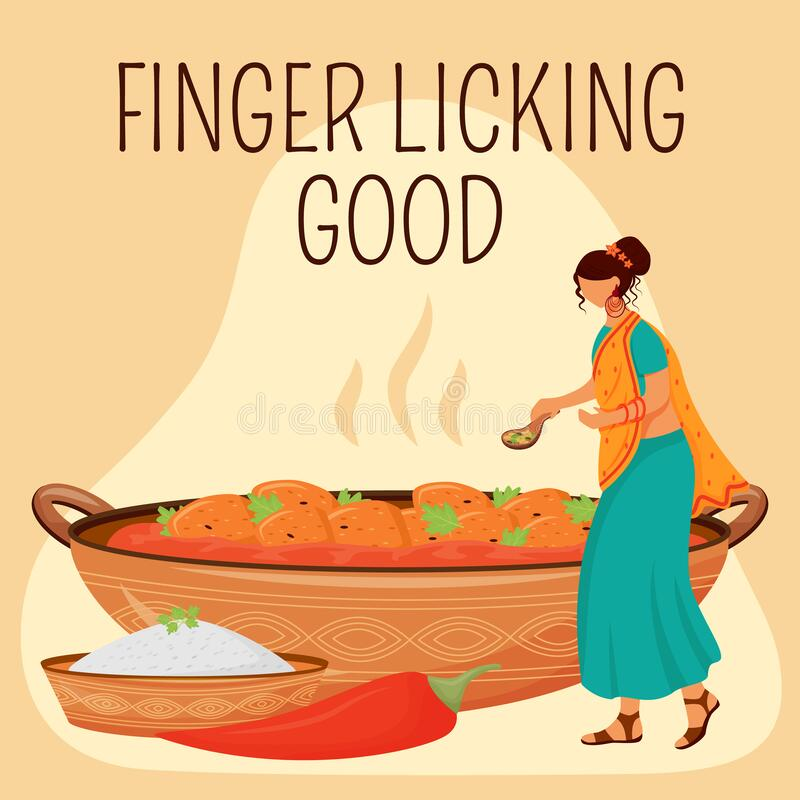

Butter Chicken Recipe

Delicious Indian butter chicken at home. It is so flavorful and easy to prepare. Add your favorite veggies to make it a complete meal.
Ingredients:
-
- 2 teaspoons garam masala
- 2 teaspoons tandoori masala powder
- 2 teaspoons Madras curry powder
- 1 teaspoon ground cumin
- ½ teaspoon ground cardamom
- ½ teaspoon ground cayenne pepper
- salt and ground black pepper to taste
- 1½ pounds boneless, skinless chicken thighs, cut into bite-size pieces
- 3 tablespoons butter, divided
- 1 yellow onion, chopped
- 1 tablespoon lemon juice
- 4 cloves garlic, minced
- 2 teaspoons chopped fresh ginger
- 1 cup tomato puree
- 1 cup half-and-half
- ¼ cup plain yogurt
- ⅓ cup cashews
- 1 bunch fresh cilantro, stems removed
-
Steps:
-
-
Mix garam masala, tandoori masala, curry, cumin, cardamom, cayenne, salt, and black pepper together in a small bowl to make spice mixture.
-
Place chicken in a large bowl and add 1/2 the spice mixture; turn to coat evenly.
-
Melt 1 tablespoon butter in a large skillet over medium heat. Add chicken; cook and stir until lightly browned, about 10 minutes. Remove from heat.
-
Melt remaining 2 tablespoons butter in a large saucepan over medium heat. Add onion; cook and stir until soft and translucent, about 5 minutes. Stir in remainder of the spice mixture, lemon juice, garlic, and ginger; cook and stir until combined, about 1 minute.
-
Stir tomato puree into onion mixture and cook, stirring frequently, about 2 minutes. Pour in half-and-half and yogurt. Reduce heat to low and simmer sauce, stirring frequently, about 10 minutes. Remove from heat.
-
Blend cashews in a blender until finely ground. Add sauce to the blender; puree until smooth.
-
Pour blended sauce over chicken in the skillet. Simmer until thickened, 10 to 15 minutes. Garnish with cilantro.
Return to Top
Return to Menu